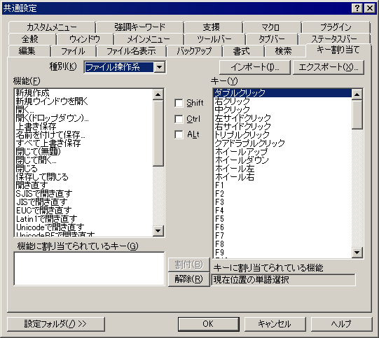

共通設定 『キー割り当て』プロパティ
『全般』
『ウィンドウ』
『メインメニュー』
『ツールバー』
『タブバー』
『ステータスバー』
『編集』
『ファイル』
『ファイル名表示』
『バックアップ』
『書式』
『検索』
『キー割り当て』
『カスタムメニュー』
『強調キーワード』
『支援』
『マクロ』
『プラグイン』

次のような操作で、キーに任意の機能を割り当てることができます。
共通設定ダイアログをキャンセルすれば、キー設定は変更されません。
①右枠の「キー」の一覧から、変更したいキーを選択。
必要ならば [Shift], [Ctrl], [Alt] の組み合わせを変える。
②左枠上部の「種別」を選択し、枠内から機能を選択する。
③[割付]ボタンを押せば、現在選択しているキーの機能が、種別・機能で選択しているものに変わります。
④[解除]ボタンを押せば、現在選択しているキーの機能が [未定義] の状態になります。
[インポート]ボタン
キー設定ファイルを読み込みます。
現在のキー設定は、読み込んだキー設定ファイルの内容に置き換わります。
共通設定ダイアログをキャンセルすれば、変更されません。
[エクスポート]ボタン
現在設定されているキーの設定内容を、キー設定ファイルとして書き出します。
[設定フォルダ]
設定フォルダボタンは、ユーザー別設定を行っている場合のみ表示されます。
参考 キー割り当て一覧をコピー